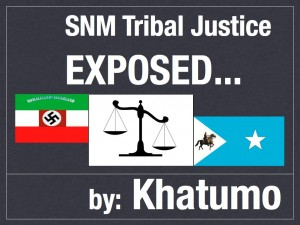

khatumo.net archive
Lascanod more than Kismayo deserves the President’s attention
By Osman Hassan
October 29, 2012

Since their invasions of the regions of Sool, Sanaag, and Cayn, (now the Khatumo State of Somalia) in October 2007 and their occupation of Lascanod, the capital of the SSC regions, oppression of the people and suppression of the media had been Somaliland’s main weapons of terror and clan colonisation: weapons aimed at conquering the defenceless population and the at suppressing any news coverage of their actions. In the face of a defiant population, determined to resist the one clan colonisation, occupation and secession, the occupiers had resorted to heinous crimes including targeted assassinations, indiscriminate detentions and imprisonments, land grabbing, ethnic-cleansing and outright massacres such as those in Kalshaale and Sool Joogto in the Buuhoodle region. Not even school children have been spared, who, when they exercise their inalienable God-given right to oppose the secession and defend the union, are bundled into prisons or taken away to notorious detention centres in the secessionist enclave. This measure is used both as a deterrent to discourage other children from engaging in anti occupation activities and as a moral blackmail against all parents to submit to the secession.In their self-defeating campaign to impose news blackouts on opposition to the secession in the SSC regions ever reaching the outside world, the authority in Hargeisa has made well-nigh impossible the work of local journalists and stringers reporting for Somali satellite TV stations in the UK and other media. When all other restrictive punitive actions have failed to dissuade the journalists from performing their duties, the Somaliland authority has once again taken a leaf out of al-Shabab’s book. Just as the Jihadists forcefully impose their fanatical ideology on an unwilling population, so are the secessionists forcing their treacherous senseless secession on all the other four recalcitrant unionist clans in northern Somalia.
And just as al-Shababab assassinates journalists to thwart negative reporting on its activities, so has Somaliland now followed suit. The first victim of this strategy is 25-year-old Ahmed Farah Sakin, a reporter for the Somali London-based Universal TV station. This is meant to be an exemplary treatment to serve as a lesson for others. Three assailants, reportedly wearing government military uniforms, shot him as he was returning to his home. His crime in the eyes of Somaliland was to report on widespread demonstrations in Lascanod and other places in the SSC regions in support of the appointment of the new Prime Minister and jubilation at the recent positive developments in Somalia. Such public actions, displaying support for Somalia and conversely opposition to the secession, is nationally commendable but for Somaliland it is an anathema, a punishable treasonable act to their own high treason of the union!
Following this abominable murder of the journalist, anonymous threatening messages were sent to other reporters warning them that similar fate awaits them if they remain anywhere within Somaliland’s reach in its occupied parts of the SSC regions. Not surprisingly, and as they envisaged, all remaining journalists have run for their lives and left the region. The international community has hitherto paid little attention to Somaliland’s violations of human rights and the crimes against humanity it committed in the SSC regions. Most culpable is the United Nations’ International Expert on the Human Right’s Situation in Somalia for his dereliction of his duties to monitor and report on these human rights abuses. Whereas international human rights NGOs, such as Human Rights Watch, admirably cover Somaliland’s human rights violations in the SSC regions, the purview of the International Expert by contrast has been nothing more than cosying up to Somaliland, Puntland and the defunct TFG as if PR was a substitute for human rights defence.
It is therefore to the credit of the British Ambassador to Somalia, His Excellency Ambassador Matt Bough, wielding the historical weight of his government as the former colonial power in the area, and which in the past been much maligned for mollycoddling the secessionists, that he should so quickly and unequivocally intervene to condemn this dastardly targeted assassination of the journalist and demand from the occupying Somaliland authority to bring the perpetrators to justice.
UN SRSG, ambassador Augustine Mahiga has also joined the chorus of condemnations of this vile act – a welcome change from his previous blatant support for the secession (at one time when overwhelmed by their hospitality in Hargeisa, he took leave of diplomatic prudence by publicly calling for their recognition!). On a number of occasions, he rode roughshod over the rights of the SSC regions. One such occasion was during the selection of Parliamentarians when he shamelessly colluded with Faroole of Puntland in depriving Khatumo State of Somalia the selection of all its allotted MPs. It is gratifying to see him bow to the new wind of change blowing in Somalia.
The people of Khatumo had made sacrifices in the past to oppose the colonises and again unaided against the secessionists in the absence of a functioning Somali government. Now that Somalia has a government, the job of defending the country and its unity is primarily that of its government. It is time therefore for President Hassan to get his priorities right. Lascanod matters more than Kismayo which seem to lately consume most of his attention. Kismayo and the Jubaland regions after all will always remain part of Somalia, and left to themselves by outsiders, (above all Kenya), the locals are able to come to a harmonious inclusive win-win consensual arrangement for running their region in conformity with the provisional constitution. Lascanod unlike Kismayo is the linchpin holding together the union of former Italian Somaliland and British Somaliland. His choice of priorities between Kismayo and Lascanod will mean a choice between local issues and the more existential national determining Somalia’s unity. The priority of the Somali people other than the secessionists is quite clear: it is unity, pure and simple. As their elected president, he should follow their wish and hence provide moral and material support for the liberation of Lascanod from its occupying renegades.
Osman Hassan
Khatumo Forum for Foreign Affairs
Email osman.hassan2 @gmail.com